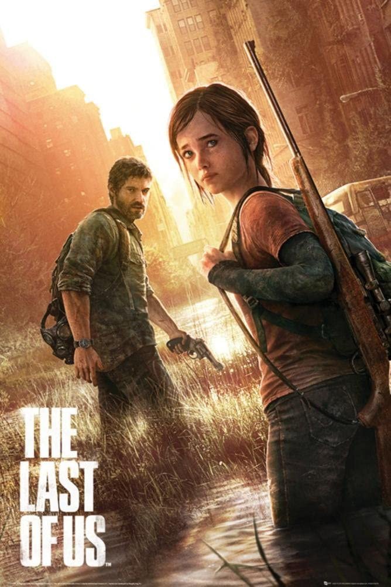

Inspiration
The human condition fascinates me. Why do we act the way we do? What drives us? Each piece of art reflects the author's view on these ideas. The following are some of the works I found inspirational. Science fiction is a genre I gravitate towards but no so much for its tech stuff. Good science fiction works don't so much as look out as they look in. They take extreme circumstances and see how humanity responds. Note, my imagination is weak (I can't visualize multiple subject, scenes, or movement) so I am biased towards movies and video games. In my opinion, video games are one of the strongest storytelling genres, forcing us to fully embrace and engage with the narrative.


Movies
Arrival: a quintessential scifi movie that explores the human need for connection and the concept of free will
The Prestige: exploring duality, and how obsession and competition can ruin us
Inception: forgiveness and facing your past, how we see reality
Games
The Legend of Zelda: Breath of the Wild: the atmosphere is soothing and absolutely gorgeous
The Last of Us: how relationships shape us, a beautifully crafted narrative

Nier Automata: tackling our purpose in life long past the end scene
Movies
Arrival: a quintessential scifi movie that explores the human need for connection and the concept of free will
The Prestige: exploring duality, and how obsession and competition can ruin us
Inception: forgiveness and facing your past, how we see reality
Games
The Legend of Zelda: Breath of the Wild: the atmosphere is soothing and absolutely gorgeous
The Last of Us: how relationships shape us, a beautifully crafted narrative
Nier Automata: tackling our purpose in life long past the end scene